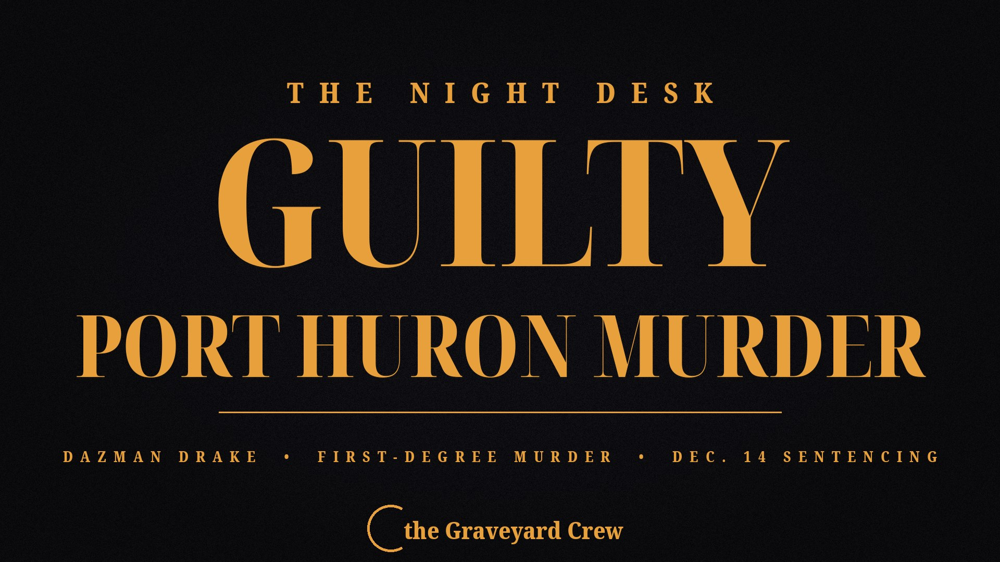

November 13, 2026 · 1 min read
Dazman Drake found guilty of first-degree murder in Port Huron killing of Vincent Buckles

Headline card by The Night Desk
Dazman Drake found guilty of first-degree murder in Port Huron killing of Vincent Buckles
A jury found Dazman Drake, 24, guilty of first-degree murder on Friday, Nov. 13, for the death of Port Huron resident Vincent Buckles.
The jury reached its verdict early Friday morning after deliberations that continued from Thursday afternoon, following a two-week jury trial.
Drake was also found guilty of first-degree home invasion, possession and concealment of stolen property, tampering with evidence, and felony firearm use.
The killing
Buckles was found dead in his home on Vanness Street on Jan. 28, 2025, from seven gunshot wounds. Police and firefighters were already in the area responding to a burning car that proved to be connected to the slaying.
A Port Huron Police Department investigation concluded co-defendant Sayon Florence allegedly arranged to have Drake shoot and kill Buckles. Florence was previously found guilty for Buckles' murder after a jury trial in September.
Security recordings captured Florence and Drake in the area around Vanness Street before the murder, with Florence driving a red Jeep Patriot and Drake driving a black Ford Explorer — the same make and model as the car found burning the night of the killing.
Prosecutors argued the incident involved the Nine Trey Gangsters and that a jail-call recording showed the murder had been approved beforehand.
What happens next
A sentencing hearing for Drake is scheduled for 1:35 p.m. Dec. 14 — the same day Florence is also scheduled to be sentenced. Both face up to life in prison.
Source: Port Huron Times Herald — read the original report
← Back to latest stories